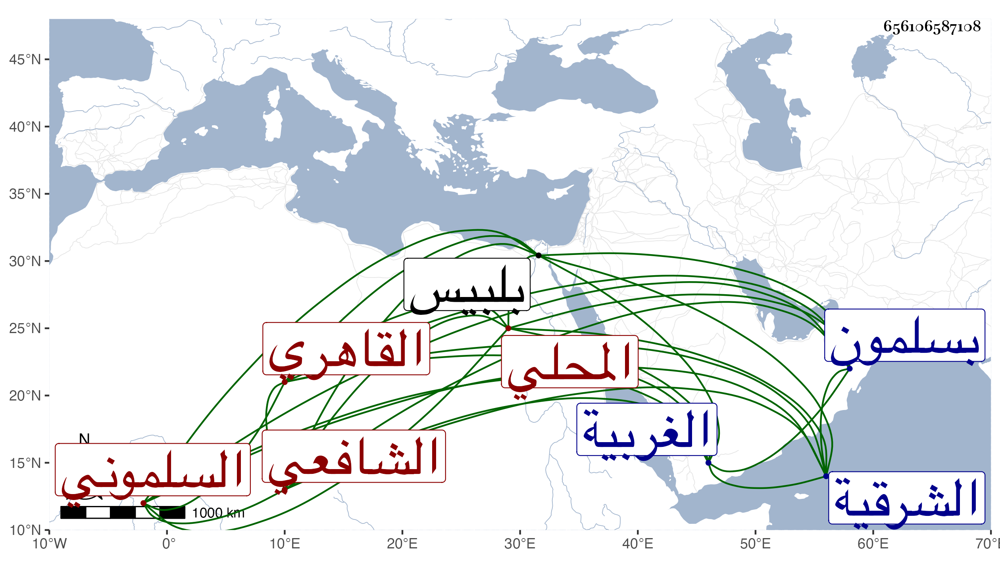

0902Sakhawi.DawLamic.ITO20230111-ara1.EIS1600.656106587108
Biography ID: 656106587108
إبراهيم بن خليل بن إبراهيم بن موسى بن موسى برهان الدين المحلي الأصل وهي محلة دمتا من الغربية السلموني ثم القاهري الشافعي . ولد في سنة تسع وعشرين وثمانمائة بسلمون من الشرقية وحفظ القرآن ببلبيس عند البرهان الفاقوسي ومختصر أبي شجاع والجرومية وبعض المنهاج واشتغل يسيرا ولازم أخي في الفقه والعربية وكذا قرأ علي الكثير من البخاري وغيره وحضر بحث غالب شرح ألفية العراقي للناظم أو الكثير منه وأخذ عن أبي السعادات البلقيني والزين خالد المنوفي والجلال المحلي وطائفة بل قرأ على البوتيجي في الفرائض وغيره وجود القرآن على الشهاب السكندري والنور الإمام وعبدالدائم وكتب بخطه أشياء وخطب وأم وتكسب بالشهادة وقصر نفسه عليها ولم يمهر مع خير وستر وفقر وحج وجاور غير مرة وحضر هناك دروس البرهان وأخيه الفخر .
